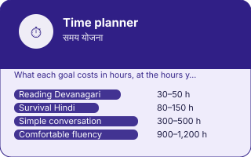

EkGuru › Learn Hindi › Tools › Time planner
How long will Hindi take me?
🔊 Tap any speaker button to hear Hindi spoken. Too fast or slow? Use the speed button at the bottom-right of the page.
Enter your real hours — not your intended ones — and see a projection for each milestone. This is arithmetic on your inputs, not a promise, and it is honest about that.
The milestones and the reasoning are written out below without JavaScript.
The milestones, and what they actually mean
Recognising every letter and sounding out unfamiliar words. This is the most predictable milestone on the list because the script is phonetic and finite.
Greetings, numbers, prices, directions, ordering food. Enough to travel independently and be treated as someone making an effort.
Talking about yourself, your day, your plans, with mistakes that do not block understanding. This is where most learners want to be and where most stop short.
Following a film without subtitles, arguing, explaining. The published guideline ranges for this level of Hindi for an English speaker sit around here.
Why the numbers move so much
Two people with identical hours can end up a year apart, and the difference is almost always the same thing: how much of the time was spent producing language rather than consuming it. Reading, apps and videos build recognition. Only speaking builds speech, and speaking is uncomfortable, which is precisely why it is the part people quietly skip.
The other variable is consistency. Twenty minutes daily beats three hours on a Sunday by a wide margin, because memory consolidates between sessions and there is nothing to consolidate if the sessions are a week apart.
Questions
There is no single honest number, and any site giving you one without asking about your hours is guessing. What is reliable is the shape of it: hours per week matters far more than total months, and consistency matters more than intensity. This planner works from your own hours rather than an average.
They are arithmetic on the hours you enter, against widely-cited guideline ranges for how long a category-of-difficulty language takes an English speaker. They are a projection from your inputs, not a measurement and not a promise.
Because it is the only activity that trains production, which is the ability everything else is supposed to serve. An hour of conversation moves you further than an hour of app drills, and every experienced learner will tell you the same.
In the calculator above, doubling your speaking hours moves every milestone more than doubling your total study time does. That is not a sales pitch, it is the arithmetic — and it is why one hour a week with a person is worth more than five with an app.
Find a Hindi Guru Free Hindi guidesNext
Time planner, in one picture
Every number and every word on this plate is taken from the tool below it, not drawn by hand: what you see here is what the tool holds.
